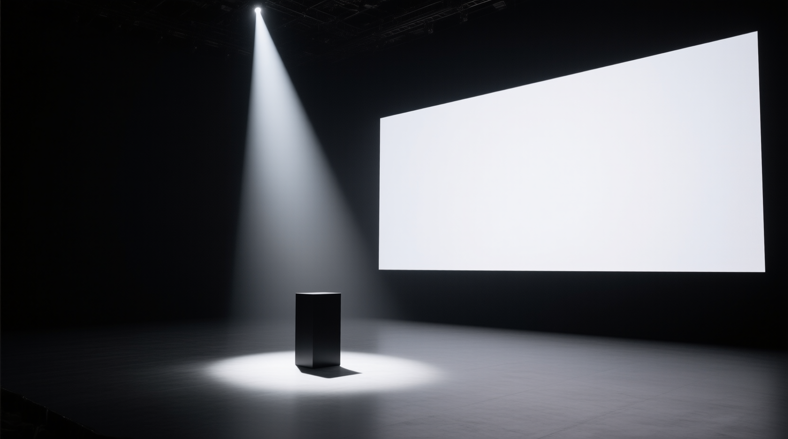

雲端編排，
地端算力。
算力預算自主，技術站在雲端巨人肩膀上，生成模型開源不鎖定。
今天要談的四個重點
企業導入生成式 AI 的兩難
只用公有雲生成 API
- 每次生成都是計次計費，用量越大成本越不可控
- 綁定單一供應商的模型與定價，議價空間有限
- 供應商下架或調整模型，工作流程被迫跟著改變
只買地端算力，從零自建
- 要自己重造一套智慧編排介面，開發與維運成本高
- 跟不上雲端 agent harness 的技術迭代速度
- 上手門檻高，落地速度慢，難以規模化複製
企業真正要的是，算力成本自己說了算，技術又不必從零重造。
雲端編排，地端算力
LLM 推論層 — Anthropic Cloud
由雲端供應商持續迭代的 agent 能力，直接為你所用，不必自建
編排與後製層 — Claude Code 終端機
站在雲端最新的 harness 技術之上編排流程，並在本機用程式完成剪接、調色、字卡與配樂
算力密集層 — pixelforge Appliance
開源模型加自建算力，成本與維運主導權留在自己手上
三層分工，剛好對應三個核心優勢——雲端層繼承技術迭代、本機層省下重造編排介面的成本、內網算力層掌握預算與開源自主，稍後逐一展開。
pixelforge，20 個模板，5 大分類
| 分類 | 代表模型 | 用途重點 |
|---|---|---|
| 圖片生成 | Tongyi Z-Image Turbo · Qwen-Image · Qwen-Image 2.1 · SDXL | 從幾秒的快速試稿到高細節、可讀文字的正式輸出，支援透明背景 |
| 修改圖片 | Qwen-Image-Edit 2509 · Qwen-Image 2.1 | 指令式編輯，最多 10 張參考圖，鎖定角色一致性 |
| 影片生成 | Wan 2.2 · LTX-2.3 · SkyReels-V2 · MiniMax H3 | 5 秒到 31 秒不等，含原生同步音效的多鏡頭敘事，可混合圖片、影片、音訊作為參考 |
| 圖片轉影片 | 同上模型的 I2V 版本 | 讓一張定稿畫面動起來，延續靜態設計資產 |
| 音樂生成 | MiniMax Music 3 | 結構化歌詞加標籤，生成完整歌曲 |
用一支影片，示範 FDE 的落地能力
角色，不能用真人照片
需要一個專業形象代言人，但真人照片涉及肖像權爭議。解法：全程用文字描述生成虛構角色，特徵組合不對應任何真實存在的人。
產品，其實是一項專業服務
ASRock AI Center 的 FDE 服務是「人的專業能力」，不是實體物件。官網 banner 文字與 logo 太多，直接當參考圖容易被模型畫壞，改以「全息部署藍圖」代表服務落地能力。
場景，從熱鬧展場到極簡舞台
從商展主題演講的熱鬧光柱，改為呼應 Apple 早期發表會的純黑極簡舞台，最終選擇「少即是多」的版本。
三個角色，一支影片的骨架
角色定裝照
虛構的東亞女性主管形象，黑色西裝、正式白襯衫，全程無真人肖像
FDE 服務概念視覺
浮空全息部署藍圖，用視覺化的落地能力取代不存在的實體產品

極簡發表會舞台
純黑背景、單一聚光燈，呼應「少即是多」的發表會美學
從平鋪直敘，到懸念與爆發
- 第一版 — 走進舞台、抬手、藍圖緩慢浮現。平鋪直敘，缺乏張力。
- 敘事優化 — 參考官方與社群案例，歸納「隨時間變化、聲音推動情緒、固定與變動分開講」三個原則。
- 8 秒版 — 沉靜懸念到觸碰瞬間爆發，因果觸發製造戲劇張力。
- 14 秒版 — 懸念、爆發、細看、收尾，一鏡到底完成完整敘事弧線。
像素交給模型，品牌交給程式
文字提示詞直出影片
pixelforge 生成角色、舞台與鏡頭。擅長真實人物與光影，但文字與 logo 容易畫壞。
X870E Taichi 30 秒廣告
主機板、字卡與音效全由 Python 繪製和合成。產品細節與文字精準，可完整重現。
生成鏡頭，程式收尾
pixelforge 生成 5 段鏡頭，Claude Code 在本機疊上監控介面、追蹤地圖、字卡並合成配樂。
依素材性質選路徑，真實感交給生成模型，品牌元素交給程式碼。
算力預算、技術繼承、開源自主
算力預算
用固定的自建算力取代計次計費的雲端生成 API，用量越大，總持有成本越可控，預算規劃更精準。
技術繼承
站在 Anthropic 持續迭代的 agent harness 之上，不必自己重造一套智慧編排介面，技術跟得上業界最新進展。
開源自主
生成模型全數開源（Qwen、SDXL、Wan、LTX、MiniMax H3 等），pixelforge 與 MCP 整合層可獨立維護，不被單一供應商鎖定。
30 秒 1080p 程式算繪廣告，全片輸出時間
混合路徑，從第一張角色圖到 30 秒含配樂的成片
程式碼就是交付物，重跑即可重現，換參數就能換產品
全片算繪前先自我檢查，再交由人工審片
目前做不到的事，先說清楚
生成結果有隨機性。同一段提示詞每次產出不同，需要多抽幾版再挑選，時程要預留迭代空間。
單段生成影片有長度上限。長片要靠多段剪接，跨鏡頭的角色一致性依賴定裝照參考。
兩條路徑各有盲區。生成模型不擅長文字與 logo，程式算繪不擅長真實人物與自然光影。
成片仍需人工把關。agent 的影格檢查只是初篩，品牌、肖像與商標審核仍由人負責。
地端算力有容量上限。前期需要硬體投資，尖峰需求要排程或分批生成。
讓我們安排一次
POC 討論。
帶著您真實的品牌素材與需求，我們可以在一週內產出第一版可視化成果，驗證這套雲端編排、地端算力的架構如何為您的團隊落地。